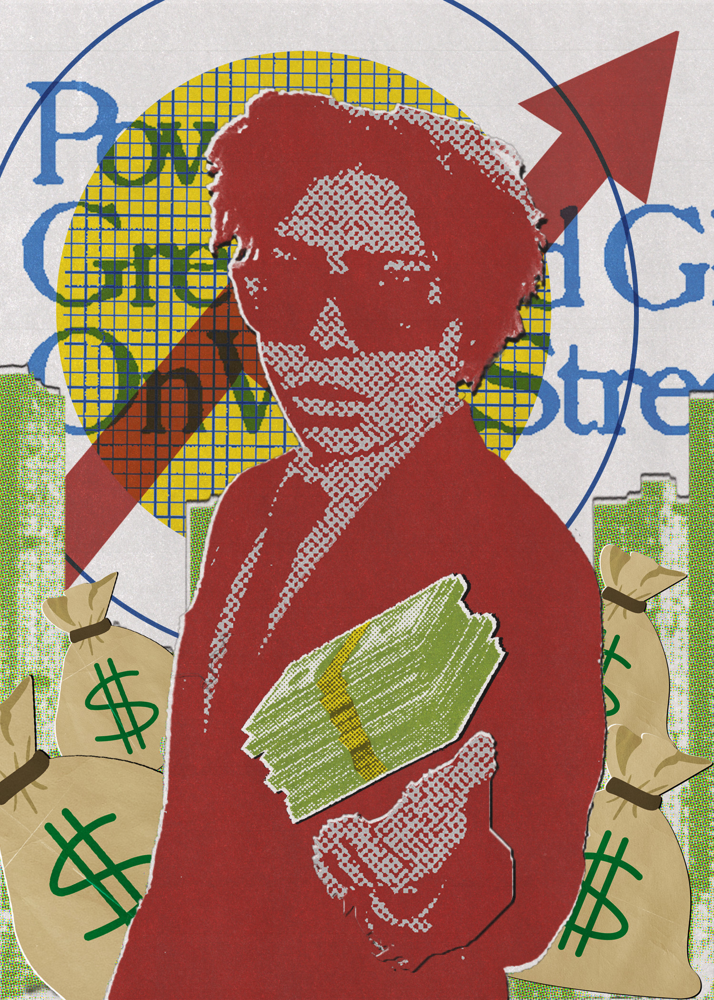

original photo

Though I used a lot of printed photographs and real images to make it look like paper. I did wanted to make a pattern that was added a bit of playful nature to contrast against the realistic images I used.